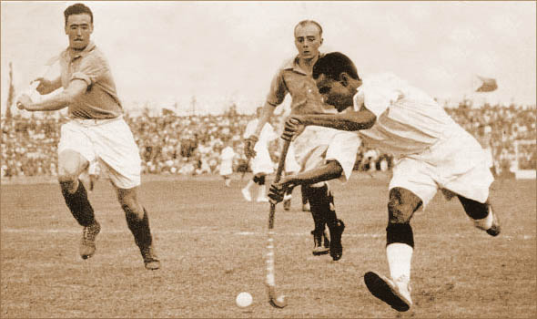

Major Dhyanchand
A Hockey Legend of all time

Right side of the picture Dhyan Chand with the ball vs. France in the 1936 Olympic
semi-finals.
Some of the Important Facts about this Indian Hockey legends
- Dhyan Chand was born on 29 August 1905 in Allahabad, Uttar Pradesh.
- Dhayan Chand considered as one the greatest field hockey players of all time
- Dhyan Chand was employed by the British Indian Army as a Sepoy at the age of 16.
- Dhyan Chand helped India in earning three Olympic gold medals (1928, 1932 and 1936).
- Dhyan Chand was also known as “The Wizard” for his superb ball control
- The fear of Dhyan Chand’s marvellous game play forced the officials in Netherlands to break his hockey stick to check if there was a magnet inside.
- He scored more than 400 goals in his international career.
- During a match in the 1936 Olympics, Dhyan Chand lost a tooth in a collision with Germany goalkeeper Tito Warnholtz.
- Cricket world’s legend Don Bradman and Hockey’s greatest player Dhyan Chand once came face to face at Adelaide in 1935. Chand played his final international match in 1948.
- He got the name of Dhyan Chand because he used to do practice during under the moon (Chand) light; his fellow players gave him this name. Government of India awarded him with Padma Bhushan in 1956
- In 1956, at the age of 51, he retired from the army with the rank of Major.
- National Sports Day is celebrated on 29th August which is Dhyan Chand’s birthday
If you want to know more about such incredible personality, you can visit here.